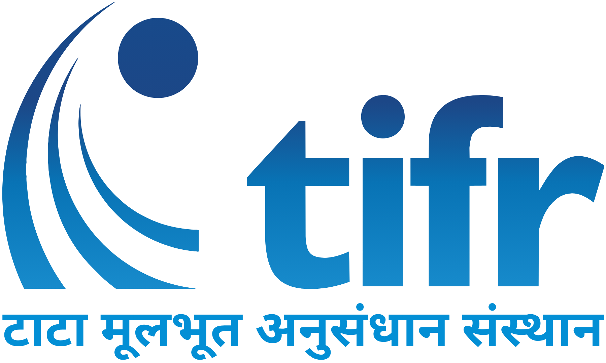
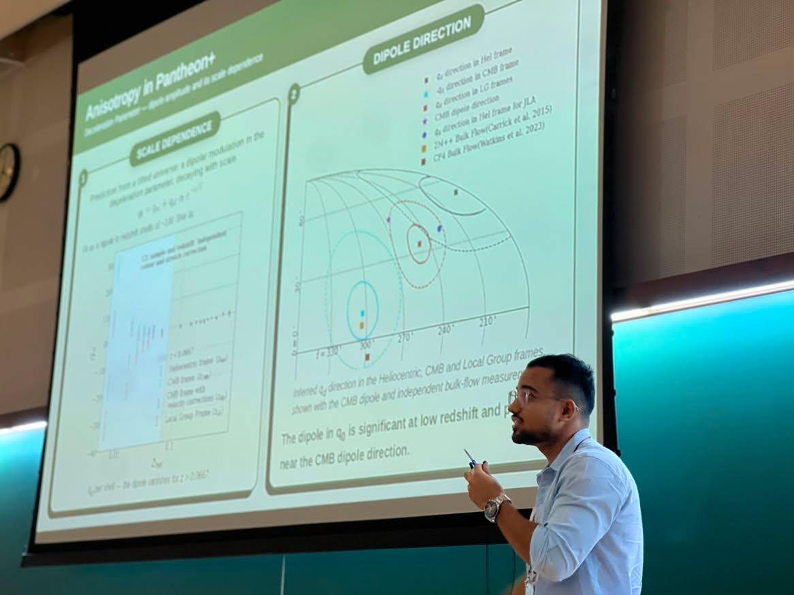

Observational Cosmology · Type Ia Supernovae · Large-Scale Structure

Tata Institute of Fundamental Research
Integrated PhD Student, Tata Institute of Fundamental Research (TIFR), Mumbai
I am a computational cosmologist working on observational cosmology,
Type Ia supernovae, cosmography, and large-scale structure surveys.
My research focuses on extracting cosmological information from
supernova observations and testing cosmological models using
data-driven approaches.
I am currently a member of the LSST Dark Energy Science Collaboration (DESC)
and lead a project investigating possible anisotropies in the local Universe
using Type Ia supernova observations.
I am also involved in characterizing the Fundamental Plane sample from the
DESI Legacy Imaging Surveys and developing realistic mock catalogues for
cosmological inference studies.
“You too can be a hero”
— All Might, My Hero Academia

Research Interests
Type Ia Supernova CosmologyCosmographyObservational CosmologyDark EnergyCosmic AnisotropyLSST DESCPeculiar VelocitiesBulk FlowsMachine Learning for LSS
Education
Ph.D., Physics
2023 – Present (expected early 2027)
Tata Institute of Fundamental Research (TIFR), Mumbai, India · Advisor: Dr. Mohamed Rameez
M.Sc., Physics
Sept. 2020 – 2023
Tata Institute of Fundamental Research (TIFR), Mumbai, India · Integrated PhD programme
JournalA. Sah et al., “Pantheon+ supernovae corrected for progenitor age indicate the universe is decelerating”
Monthly Notices of the Royal Astronomical Society ·
arXiv:2606.09650
ProceedingsA. Sah et al., “Examining the Cosmic Anisotropy with the Pantheon+ Supernovae”
Springer Nature Proceedings
Beyond Physics
When I'm not thinking about supernovae, I'm usually training calisthenics,
out for a run, sketching, or on a trek somewhere. I'm also an anime fan
— happy to talk recommendations.
CalisthenicsRunningSketchingTrekkingAnime
Talks & Presentations
The Concurrence of Mega-SurveysICTS, Bangalore · Aug 2026
Flash talk.
Supernova Cosmology: New Challenges and OpportunitiesYonsei University, Seoul · Jun 2026
Talk on Pantheon+ anisotropy and progenitor-age systematics.
Cosmic Lighthouses: Astrophysical and Cosmological Challenges with Type Ia SupernovaeKavli Institute for Cosmology, Cambridge · Jul 2025
Talk on Pantheon+ anisotropy.
5th EuCAPT Annual SymposiumOnline · May 2025
Talk on anisotropy in Pantheon+ supernovae.
XXVI DAE-BRNS High Energy Physics Symposium 2024Banaras Hindu University, Varanasi · Dec 2024
Contributed talk on cosmic anisotropy with Pantheon+.
A Multipolar Universe?Aristotle University of Thessaloniki, Greece · Sept 2023
Talk on Pantheon+ anisotropy.
Less Travelled Path to the Dark UniverseICTS, Bangalore · Mar 2023
Talk on cosmological analysis with the Pantheon+ compilation.
Schools & Workshops
The Concurrence of Mega-SurveysICTS, Bangalore · Jul–Aug 2026
Project: implemented and trained a transformer-based decoder (GOTHAM) to accelerate halo catalogue generation from particle-mesh simulations via distributed multi-GPU training.
Rethinking CosmologyRaman Research Institute, Bengaluru · Dec 2025
Largest Cosmological Surveys and Big Data ScienceICTS, Bangalore · May 2023
Project: reanalyzed Dark Energy Survey cosmic-shear measurements using machine-learning techniques.